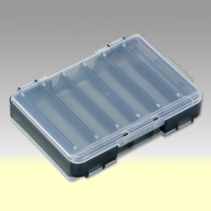
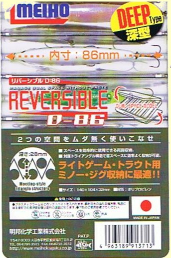
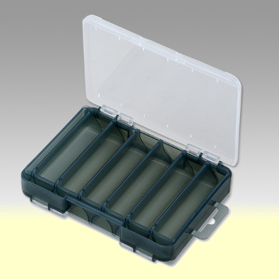
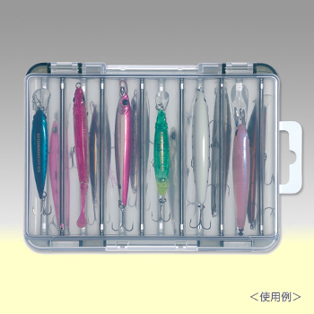

私のお気に入り
ルアーケース MEIHO リバーシブル D-86
会社帰りに釣具屋に行き、珍しく入荷していたダイワ製のドクターミノー、ジョイントモデルを買いだめした。こりゃルアーケースも買わないと、手持ちのケースは満杯だなぁと思って探したのがこのケース。


明邦化学工業株式会社というメーカーの、リバーシブルD-86という製品です。今まで使っていたのも同じ形式なので、おそらく同じメーカーかと思われますが、ケースの両面に三角断面の収納スペースが形成されており、コンパクトな大きさながら、１２個のミノーやスプーンが入ります。この製品は「深型」と謳っているので、リップやフックの張り出したミノーもすんなり収まります。フタは半透明で、中身が見えるようになっていて、ありがたいことに、穴あきのタブが付いているので、そこに落下防止用のタコ糸を結び、ベストに結わえることができます。サイズは 140×104×32mm、収納部の深さは28mmです。

メーカーのサイトには、「対面トライアングル構造で、スペースを効率的に使用できる両面収納タイプ。深型に設計することで、体高のあるトラウト用のミノーなどがキッチリと収納可能。もちろん、ライトゲーム用のミノーやジグなどの収納にも最適です。使用後は水抜きダクト付きなので丸洗いが可能。」と書かれていました。

このシリーズはサイズが豊富に揃っているので、サクラマスとか海用の大きなルアーを入れたい人にも満足してもらえると思います。メイド・イン・ジャパンというのも嬉しいポイントです。
追記：このケースの仕切りスペースには、50mmのミノーなら、2つ重ねて入れることができるので、容量が倍に増えます。スプーンも、5ｇ程度の大きさなら２つ入るのが嬉しいところです。
私のお気に入り 目次へ
サイトマップ
ホームへ
お問い合わせ